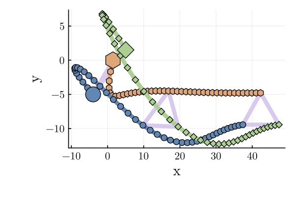

Moving Formation Example
This example combines a formation goal in positions with a consensus goal in velocities. As such, the coordination sheaf is the constant sheaf $\underline{\R}^4$ on the three vertex path graph. This encodes a leader-follower topology with the middle agent in the path acting as the leader. The leader’s objective is to track a constant rightward velocity vector and minimize its control actuation while the followers’ objectives are to simply minimize control actuation. The edge potential functions are of the form $U_e(y)=(1/2)\|y-b_e\|_2^2$ where the velocity coordinates of each be are 0 encoding consensus in velocity while the position coordinates are chosen to achieve a fixed displacement between the leader and its followers. The results of this controller run for 160 iterations are shown below.
using Test
using AlgebraicOptimization
using LinearAlgebra
using BlockArrays
using Plots
include("../../../examples/paper-examples/PaperPlotting.jl")
using .PaperPlottingSet up each agent's dynamics: $x(t+1) = Ax(t) + Bu(t)$
dt = 0.1 # Discretization step size
A = [1 dt 0 0; 0 1 0 0; 0 0 1 dt; 0 0 0 1]
B = [0 0; dt 0; 0 0; 0 dt]
C = [1 0 0 0; 0 0 1 0]
system = DiscreteLinearSystem(A, B, C)DiscreteLinearSystem([1.0 0.1 0.0 0.0; 0.0 1.0 0.0 0.0; 0.0 0.0 1.0 0.1; 0.0 0.0 0.0 1.0], [0.0 0.0; 0.1 0.0; 0.0 0.0; 0.0 0.1], [1 0 0 0; 0 0 1 0])Initialize the weight matrices such that the objective only concerns velocities
Q_leader = [0 0 0 0; 0 50 0 0; 0 0 0 0; 0 0 0 50]
Q_follower = zeros(4, 4)
R = I(2)2×2 LinearAlgebra.Diagonal{Bool, Vector{Bool}}:
1 ⋅
⋅ 1Define the parameters for the MPC
N = 10
control_bounds = [-2.0, 2.0]
params1 = MPCParams(Q_leader, R, system, control_bounds, N, [0.0, 3.0, 0.0, 0.0]) # track this velocity
params2 = params3 = MPCParams(Q_follower, R, system, control_bounds, N)MPCParams([0.0 0.0 0.0 0.0; 0.0 0.0 0.0 0.0; 0.0 0.0 0.0 0.0; 0.0 0.0 0.0 0.0], Bool[1 0; 0 1], DiscreteLinearSystem([1.0 0.1 0.0 0.0; 0.0 1.0 0.0 0.0; 0.0 0.0 1.0 0.1; 0.0 0.0 0.0 1.0], [0.0 0.0; 0.1 0.0; 0.0 0.0; 0.0 0.1], [1 0 0 0; 0 0 1 0]), [-2.0, 2.0], 10, [0.0, 0.0, 0.0, 0.0])Define the constant sheaf
c = CellularSheaf([4, 4, 4], [4, 4])
set_edge_maps!(c, 1, 2, 1, I(4), I(4))
set_edge_maps!(c, 1, 3, 2, I(4), I(4))4×4 LinearAlgebra.Diagonal{Int64, Vector{Int64}}:
-1 ⋅ ⋅ ⋅
⋅ -1 ⋅ ⋅
⋅ ⋅ -1 ⋅
⋅ ⋅ ⋅ -1Set up solver to perform MPC and solve the optimization problem with ADMM
x_init = BlockArray(5 * rand(-1.0:0.1:1.0, 12), c.vertex_stalks)
b = [5, 0, 5, 0, -5, 0, 5, 0] # Desired pairwise distance
prob = MultiAgentMPCProblem([params1, params2, params3], c, x_init, b)
alg = ADMM(2.0, 10)
num_iters = 160160Run solver on MPC
trajectory, controls = do_mpc!(prob, alg, num_iters)(Any[[1.5, -2.0, 0.0, -4.5, -4.0, -4.0, -5.0, 2.5, 5.0, -5.0, 1.5, 4.5], [1.3, -1.7999999980024417, -0.45, -4.299999998002365, -4.4, -3.888007442757346, -4.75, 2.4390711487944845, 4.5, -4.799999998066731, 1.95, 4.299999998010161], [1.1200000001997559, -1.599999996005023, -0.8799999998002366, -4.099999996004853, -4.7888007442757345, -3.7663569855127284, -4.506092885120552, 2.3727432003645625, 4.020000000193327, -4.599999996242598, 2.379999999801016, 4.099999996038964], [0.9600000005992535, -1.399999994007761, -1.2899999994007219, -3.89999999400748, -5.165436442827008, -3.63545244085804, -4.2688185650840955, 2.301767681199203, 3.560000000569067, -4.399999994410598, 2.7899999994049125, 3.899999994068548], [0.8200000011984774, -1.1999999920106756, -1.67999999880147, -3.6999999920102615, -5.528981686912812, -3.4956967375006256, -4.038641796964175, 2.2268130869912386, 3.120000001128007, -4.1999999924687215, 3.179999998811767, 3.6999999920795625], [0.7000000019974097, -0.9999999900137913, -2.0499999980024963, -3.4999999900132184, -5.8785513606628745, -3.3475018876792544, -3.815960488265051, 2.1485679272658134, 2.700000001881135, -3.999999990524273, 3.5499999980197234, 3.4999999900908616], [0.6000000029960306, -0.7999999880171373, -2.3999999970038184, -3.299999988016375, -6.2133015494308, -3.1913209894988825, -3.6011036955384697, 2.0676610667151, 2.3000000028287078, -3.799999988670777, 3.8999999970288095, 3.299999988122809], [0.5200000041943169, -0.5999999860207507, -2.729999995805456, -3.0999999860197613, -6.532433648380688, -3.0275847631552653, -3.39433758886696, 1.9847333373771496, 1.92000000396163, -3.5999999868105457, 4.229999995841091, 3.099999986155572], [0.46000000559224186, -0.39999998402472603, -3.0399999944074323, -2.89999998402346, -6.835192124696214, -2.856714491869692, -3.1958642551292447, 1.9003010692225801, 1.5600000052805756, -3.3999999849440505, 4.539999994456648, 2.8999999841891717], [0.42000000718976926, -0.1999999820291703, -3.3299999928097783, -2.699999982027561, -7.120863573883184, -2.679126899949744, -3.005834148206987, 1.8148608515054696, 1.2200000067861705, -3.1999999829903003, 4.829999992875565, 2.699999982201676] … [39.61806835136171, 3.0020248644280603, -4.793083182681399, 0.00984488666908664, 35.04284412156385, 2.5848371139144133, -9.68989958618543, 0.3509401469063614, 45.04472851457437, 2.583298693578355, -9.67607831549118, 0.34406584684172326], [39.91827083780451, 3.0011428468548256, -4.7920986940144905, 0.010380154877623286, 35.301327832955295, 2.5962658628961, -9.654805571494794, 0.33215669139316156, 45.30305838393221, 2.5952584706954496, -9.641671730807008, 0.32520359548120703], [40.21838512249, 3.0003027478938935, -4.791060678526728, 0.01086536972767487, 35.56095441924491, 2.6081839625775873, -9.621589902355478, 0.31339514068257573, 45.56258423100176, 2.6076484121255015, -9.609151371258887, 0.3064130107584232], [40.51841539727939, 2.9995048249410914, -4.7899741415539605, 0.011301589411504108, 35.82177281550267, 2.620541048688661, -9.59025038828722, 0.2947007964940853, 45.823349072214306, 2.6204178415317565, -9.578510070183045, 0.2877344439731025], [40.8183658797735, 2.9987494166603095, -4.78884398261281, 0.011689942383459362, 36.083826920371536, 2.633281001566582, -9.560780308637812, 0.27611672736479564, 46.08539085636748, 2.6335221007756013, -9.549736625785734, 0.2692062546107798], [41.118240821439535, 2.998036207647257, -4.787674988374464, 0.012031621547803741, 36.34715502052819, 2.646355415920284, -9.533168635901331, 0.2576837632428297, 46.348743066445046, 2.6469155952053764, -9.522816000324656, 0.25086480828708535], [41.41804444220426, 2.997364912145063, -4.7864718262196835, 0.012327878549003315, 36.61179056212022, 2.6597173012674302, -9.507400259577048, 0.2394404962151812, 46.61343462596558, 2.6605540457007466, -9.497729519495948, 0.2327444790163093], [41.717780933418766, 2.996735219136579, -4.785239038364783, 0.012580018175028481, 36.87776229224696, 2.6733210708268955, -9.48345620995553, 0.22142328704394942, 46.879490030535656, 2.6743945543824643, -9.474455071594317, 0.21487765565117453], [42.01745445533243, 2.996146762906077, -4.783981036547281, 0.012789392881996261, 37.14509439932965, 2.6871225926937305, -9.461313881251135, 0.20366627718410638, 47.1469294859739, 2.688395641912256, -9.4529673060292, 0.19729475234584123], [42.317069131623036, 2.9955991107097395, -4.782702097259081, 0.012957397446753957, 37.41380665859902, 2.7010792346563908, -9.440947253532725, 0.18620140597464804, 47.415769050165125, 2.702517280166575, -9.433237830794615, 0.18002422288383205]], Any[[2.0000000199755825, 2.0000000199763495, 1.1199255724265404, -0.6092885120551538, 2.000000019332687, -2.000000019898383], [2.0000000199741854, 2.000000019975113, 1.2165045724461772, -0.6632794842992199, 2.0000000182413276, -2.000000019711972], [2.00000001997262, 2.0000000199737333, 1.3090454465468824, -0.7097551916535954, 2.000000018320004, -2.000000019704157], [2.0000000199708534, 2.0000000199721844, 1.3975570335741478, -0.7495459420796476, 2.0000000194187617, -2.000000019889854], [2.0000000199688444, 2.0000000199704324, 1.4819484982137123, -0.7824515972542511, 2.0000000194444834, -2.0000000198870085], [2.000000019966539, 2.000000019968435, 1.5618089818037177, -0.8090686055071357, 2.0000000185349642, -2.0000000196805243], [2.000000019963867, 2.0000000199661376, 1.637362263436173, -0.8292772933795026, 2.000000018602312, -2.0000000196723704], [2.0000000199602463, 2.000000019963015, 1.7087027128557362, -0.8443226815456953, 2.00000001866495, -2.0000000196640024], [2.000000019955557, 2.0000000199589887, 1.775875919199476, -0.8544021771711056, 2.000000019537501, -2.0000000198749572], [2.0000000199500194, 2.000000019954307, 1.8388116768288947, -0.8601800214276474, 2.000000019558514, -2.0000000198716625] … [-0.00923549251327272, 0.00586303590290866, 0.10887770004861821, -0.1875783727415296, 0.11478377183302789, -0.18891581397218588], [-0.008820175732345153, 0.005352682085366471, 0.11428748981686918, -0.18783455513199843, 0.11959777117094796, -0.18862251360516252], [-0.00840098960932132, 0.004852148500515839, 0.11918099681487233, -0.18761550710585834, 0.12389941430051997, -0.187905847227838], [-0.007979229528022396, 0.004362196838292386, 0.12357086111073612, -0.18694344188490433, 0.12769429406255026, -0.18678566785320702], [-0.007554082807817779, 0.0038835297195525466, 0.12739952877921187, -0.18584069129289657, 0.13104259243844799, -0.18528189362322703], [-0.007132090130524121, 0.0034167916434437906, 0.13074414353701436, -0.18432964121965958, 0.13393494429775032, -0.18341446323694469], [-0.006712955021941348, 0.0029625700119957432, 0.1336188534714639, -0.18243267027648488, 0.13638450495370152, -0.18120329270776062], [-0.006296930084844033, 0.0025213962602516535, 0.1360376955946529, -0.18017209171231793, 0.13840508681717673, -0.17866823365134765], [-0.00588456230501868, 0.002093747069677792, 0.13801521866835242, -0.1775700985984306, 0.14001087529791945, -0.17582903305333297], [-0.005476521963373536, 0.00168004564757696, 0.13956641962660257, -0.17464871209458327, 0.1412163825431889, -0.17270529462009196]])Plot results with triangles
PaperPlotting.plot_trajectories(trajectory, C, false, true)